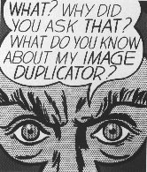
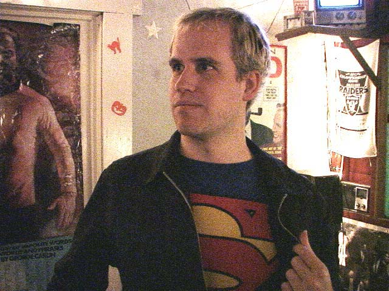
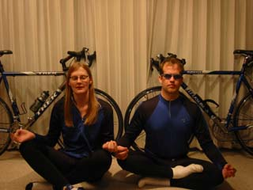

Software Geek
MoveOn commercial
"Our Future World Leaders Speak"
BETA version of my website!

Roy Lichtenstein
Image Duplicator
1963 Magna on canvas
24 x 20 in.
|
|
Tracey Jaquith Software Geek MoveOn commercial "Our Future World Leaders Speak" BETA version of my website! |
 Roy Lichtenstein Image Duplicator 1963 Magna on canvas 24 x 20 in. |
|
F A V O R I T E . . . |
|||||
Quotes... |
MoviesKoyaanisqatsi My Own Private Idaho Gas, Food, Lodging The Blair Witch Project Sex, Lies, and Videotape Hedwig and the Angry Inch The Little Mermaid Star Wars Aliens Memento |
BooksStart Where You Are - A Guide to Compassionate Living - Pema ChodronCosmos - Carl Sagan Illusions: The Adventures of a Reluctant Messiah - Richard Bach The Bean Trees - Barbara Kingsolver Interview with the Vampire - Anne Rice Fear and Loathing in Las Vegas - Hunter S. Thompson The Man Who Fell in Love with the Moon - Tom Spanbauer |
MusicSublime Tchaikovsky, Piotr Stravinksy, Igor Tori Amos Jane's Addiction Patty Griffin Lemonheads Gil Scott-Heron Dead Can Dance Phish Madonna remixes |
||
|
I N T E R E S T S |
|||||
|
Digital time-lapse photography
around the Bay and elsewhere. I shot this from Berkeley's Skyline Blvd looking west over San Francisco. |

|
My DV Filming, DVD and VCD production interests. |
|||
|
 |
|
 |
Review of a We used to enjoy mountain Biking, before our bikes were stolen. |
||

|
The "best of" from a summer month in 2002. Paris, Roma, Barcelona, Nice, |

|
Photo Album with commentary (and my first protest!) |
||
|
Tracey moved (after 6 years in San Francisco) to the warm hilly little
|
Yoga (Bikram, Hatha) Tibetan Buddhism |
||||
|
| Sign Guestbook | View Guestbook |